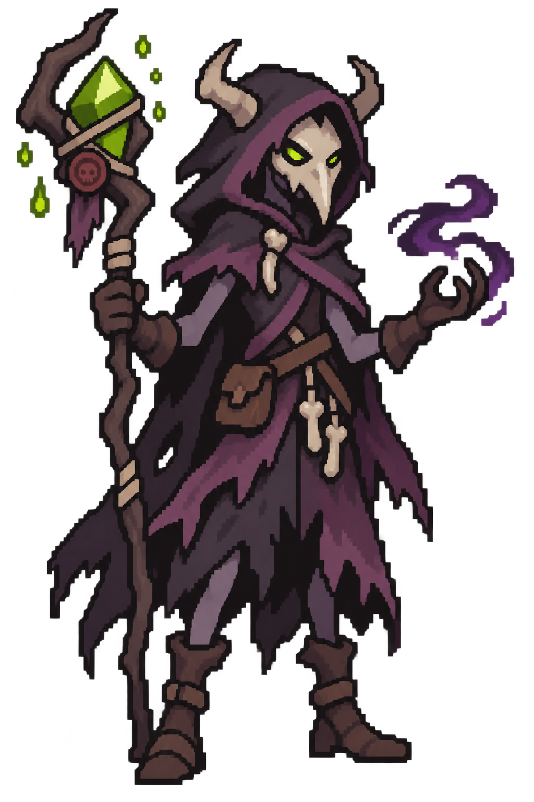

죽음의 사도

현재 전투 데이터의 가방 배치 · 6×6
죽음의 독안개 지팡이
확정 · 2칸 · 1×2 · #/#
기본 공격력 21 · 주기 2초 / 명중 시: 상대에게 중독 4중첩 / 명중 시: 상대에게 실명 4중첩 / 중독에 면역입니다.
투명 PNG디자인 설명
Death apostle poison-mist staff. Copy crooked brown wooden staff design from monster: large angular acid-green diamond crystal cradled by forked dark wood at top, ivory cross binding below it, small red wax skull seal with purple ribbon, two ivory shaft wraps. A compact opaque violet wisp hugging crystal conveys blindness alongside poison. Entire staff, head at top.